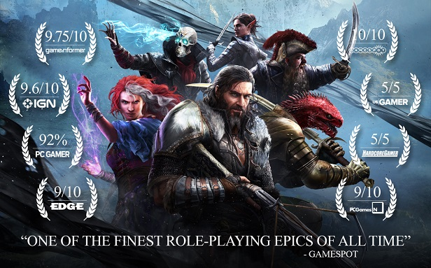
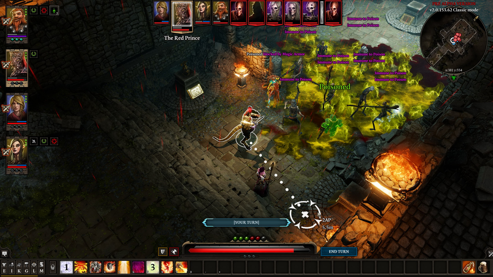

О игре
Divinity: Original Sin II — это ролевая игра с пошаговой боевой системой, разработанная и изданная Larian Studios. Это третья игра в серии Divinity и сиквел Divinity: Original Sin 2014 года.
Игра была выпущена для Windows в сентябре 2017 года, а позже портирована на PlayStation 4, Xbox One, macOS и Nintendo Switch.
Ключевые особенности
-

- Глубокий, тактический пошаговый бой
- Свобода выбора и последствий
- Совместная игра до 4 игроков
- Режим "Гамемастер" для создания своих приключений
- Богатый мир с детализированным лором
Игровой процесс
Игра предлагает огромную свободу в прохождении. Вы можете решать квесты множеством способов, комбинировать навыки неожиданными способами и даже играть за разных персонажей с уникальными историями.
Боевая система сочетает традиционные RPG-механики с инновационными элементами, такими как взаимодействие поверхностей и элементов.